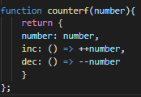

Funktionen in JavaScript
Schreiben Sie eine Funktion identity_function(), die ein Argument als Parameter entgegen nimmt und eine Funktion zurueck gibt, die dieses Argument zurueck gibt.
Schreiben Sie eine Addier-Funktion addf(), so dass addf(x)(y) genau x + y zurueck gibt. (Es haben also zwei Funktionsaufrufe zu erfolgen. addf(x) liefert eine Funktion, die auf y angewandt wird.)
Schreiben Sie eine Funktion applyf(), die aus einer binären Funktion wie add(x,y) eine Funktion addfberechnet, die mit zwei Aufrufen das gleiche Ergebnis liefert, z.B. addf = applyf(add); addf(x)(y) soll add(x,y) liefern. Entsprechend applyf(mul)(5)(6) soll 30 liefern, wenn mul die binäre Multiplikation ist.
Schreiben Sie eine Funktion curry() (von Currying), die eine binäre Funktion und ein Argument nimmt, um daraus eine Funktion zu erzeugen, die ein zweites Argument entgegen nimmt, z.B. add3 = curry(add, 3);add3(4) ergibt 7. curry(mul, 5)(6) ergibt 30.
Erzeugen Sie die inc-Funktion mit Hilfe einer der Funktionen addf, applyf und curry aus den letzten Aufgaben, ohne die Funktion inc() selbst zu implementieren. (inc(x) soll immer x + 1 ergeben und lässt sich natürlich auch direkt implementieren. Das ist aber hier nicht die Aufgabe.) Vielleicht schaffen Sie es auch, drei Varianten der inc()-Implementierung zu schreiben?
Schreiben Sie eine Funktion methodize(), die eine binäre Funktion (z.B. add, mul) in eine unäre Methode verwandelt. Nach Number.prototype.add = methodize(add); soll (3).add(4) genau 7 ergeben.
Schreiben Sie eine Funktion demethodize(), die eine unäre Methode (z.B. add, mul) in eine binäre Funktion umwandelt. demethodize (Number.prototype.add)(5, 6) soll 11 ergeben.
Schreiben Sie eine Funktion twice(), die eine binäre Funktion in eine unäre Funktion umwandelt, die den einen Parameter zweimal weiter reicht. Z.B. var double = twice(add); double(11) soll 22 ergeben; var square = twice(mul); square(11) soll mul(11,11) === 121 ergeben.
Schreiben Sie eine Funktion composeu(), die zwei unäre Funktionen in eine einzelne unäre Funktion transformiert, die beide nacheinander aufruft, z.B. soll composeu(double, square)(3) genau 36 ergeben.
Schreiben Sie eine Funktion composeb(), die zwei binäre Funktionen in eine einzelne Funktion transformiert, die beide nacheinander aufruft, z.B. composeb(add, mul)(2, 3, 5) soll 25 ergeben.
Schreiben Sie eine Funktion once(), die einer anderen Funktion nur einmal erlaubt, aufgerufen zu werden, z.B. add_once = once(add); add_once(3, 4) soll beim ersten Mal 7 ergeben, beim zweiten Mal soll jedoch add_once(3, 4) einen Fehlerabbruch bewirken.
Schreiben Sie eine Fabrik-Funktion counterf(), die zwei Funktionen inc() und dec() berechnet, die einen Zähler hoch- und herunterzählen. Z.B. counter = counterf(10); Dann soll counter.inc() 11 und counter.dec() wieder 10 ergeben.
Schreiben Sie eine rücknehmbare Funktion revocable(), die als Parameter eine Funktion nimmt und diese bei Aufruf ausführt. Sobald die Funktion aber mit revoke() zurück genommen wurde, führt ein erneuter Aufruf zu einem Fehler. Z.B.
temp = revocable(alert);
temp.invoke(7); // führt zu alert(7);
temp.revoke();
temp.invoke(8); // Fehlerabbruch!
Implementieren Sie ein "Array Wrapper"-Objekt mit den Methoden get, store und append, so dass ein Angreifer keinen Zugriff auf das innere, private Array hat.
my_vector = vector();
my_vector.append(7);
my_vector.store(1, 8);
my_vector.get(0) // 7
my_vector.get(1) // 8